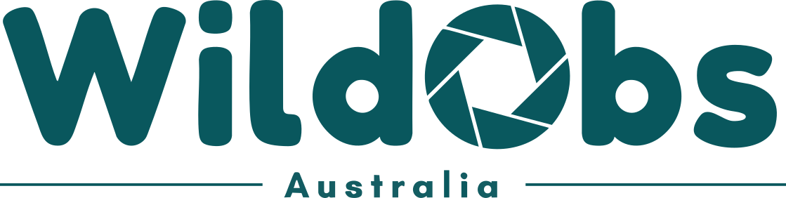
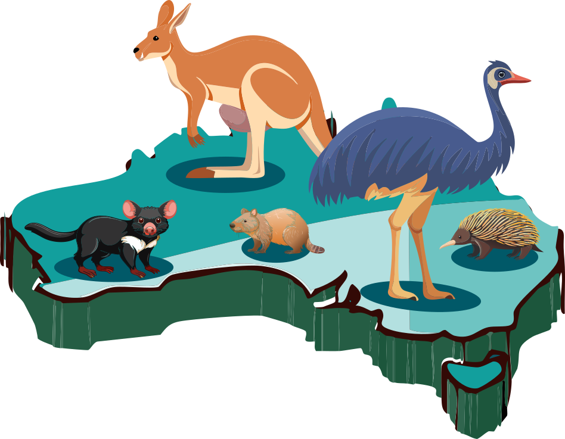

The Wildlife Observatory of Australia (WildObs) provides a suite of tools, such as the WildObs Image Platform and Tagged Image Repository, to enhance and support camera trapping across Australia. WildObsR provides programmatic access to query, download and prepare camera trap data from the WildObs Database. Every project arrives as a Camera Trap Data Package (Camtrap DP), meaning each dataset contains tables of camera deployments, wildlife detections and media (i.e., images and/or videos), along with Creative Commons licences, formatted citations and field definitions that travel with them.
- Discover what data exist: search projects by place, time, species, sampling design or contributor, including embargoed projects, which are listed before their data are released.
-
Access curated data packages, with threatened-species records protected, image records, and a citation for every project (
cite_datapackages()). -
Interoperate with other Camtrap DP tools:
as_camtrapdp()converts to canonical Camtrap DP for the camtrapdp and camtrapR packages and for GBIF. - Harmonise projects with different designs: group cameras into cells of any size, rebuild long-term deployments, and reclassify independent detections.
- Add spatial context: state, IBRA bioregion and CAPAD protected area, with the layers shipped in the package.
Full documentation and tutorials: https://wildobs.github.io/WildObsR/
Installation
# install.packages("pak")
pak::pak("WildObs/WildObsR")WildObsR needs R 4.1 or later. On Linux, install the GDAL, PROJ, GEOS and OpenSSL development libraries first (for example sudo apt install libgdal-dev libproj-dev libgeos-dev libssl-dev).
Quick start
Downloading data needs a free personal API key from the WildObs Dashboard, stored in your .Renviron file as WILDOBSR_API_KEY. The Get started article walks through it.
library(WildObsR)
api_key <- Sys.getenv("WILDOBSR_API_KEY")
# find every project with cameras in a box around the Wet Tropics of Queensland
ids <- wildobs_mongo_query(api_key = api_key,
spatial = list(xmin = 144.9, xmax = 146.5,
ymin = -19.6, ymax = -15.3))
# download them as Camtrap DP data packages; embargoed projects arrive as metadata only
dp_list <- wildobs_dp_download(api_key = api_key, project_ids = ids)
# read a table, and cite the data
deployments <- frictionless::read_resource(dp_list[[1]], "deployments")
writeLines(cite_datapackages(dp_list))No key yet? Two open projects, from the Queensland Wet Tropics and New South Wales, ship with the package:
dp_list <- example_datapackages()Tutorials
| Article | What it covers |
|---|---|
| Get started | Installing, getting an API key, the first download |
| Discover what exists | Searching the database and reading project metadata |
| Inside a WildObs data package | Every table and identifier, and how WildObs extends Camtrap DP |
| For data providers | Your projects as others see them: embargoes, obscuring, citations |
| Images for computer vision | Downloading labelled images |
| Camtrap DP interoperability | camtrapdp, GBIF, camtrapR and its survey dashboard |
| Spatial context | States, bioregions, protected areas and camera spacing |
| Detection histories and sampling effort | Effort and detection matrices for occupancy and abundance models |
| Fit single-season models | unmarked, spOccupancy, spAbundance and NIMBLE on one survey |
| Fit multi-season models | Long-term deployments, colonisation and extinction, and trends |
| Combine projects to ask one question | One model across four projects, and their sampling artifacts |
| Working with Claude | A guide to the data for AI coding assistants |
Keeping WildObsR up to date
WildObsR checks its own version the first time you query or download data in a session and warns if a newer release is available; it never blocks your work. Update by running the install command again. WildObsR uses semantic versioning (major.minor.patch):
| Change | Example | What it means for you |
|---|---|---|
| major |
1.0.0 → 2.0.0
|
Not backwards compatible. An old installed version will produce broken or wrong downloads. Update before running anything. |
| minor |
0.3.0 → 0.4.0
|
Backwards-compatible additions, such as new functions, or database changes that old code still handles correctly. Update when convenient. |
| patch |
0.4.0 → 0.4.1
|
Behaviour-preserving fixes. Nothing you rely on changes. |
Citation
Please cite the release of WildObsR you used, and every data package you analysed:
citation("WildObsR")
cite_datapackages(dp_list)Getting help and contributing
- Bugs and tutorial requests: GitHub issues
- Questions about a project’s data: data@wildobs.org.au
- Contributing code: see CONTRIBUTING
License
MIT License; see LICENSE.md. The bundled CAPAD 2022 and IBRA 7 layers are © Commonwealth of Australia (DCCEEW), licensed under Creative Commons Attribution.